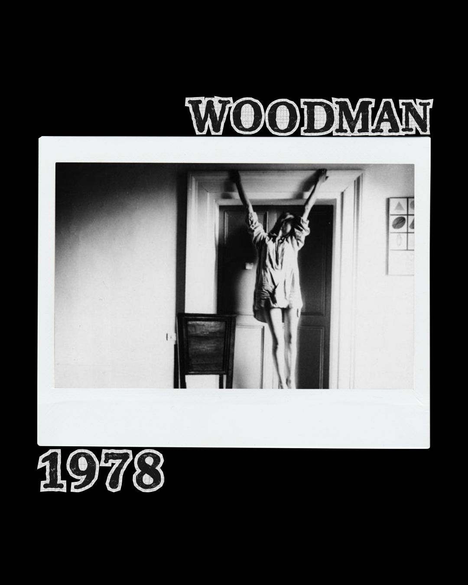
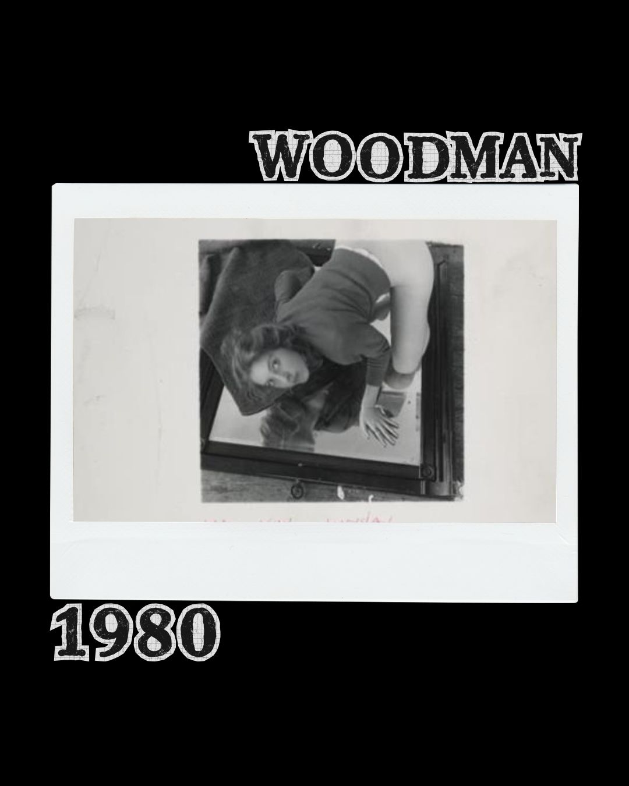
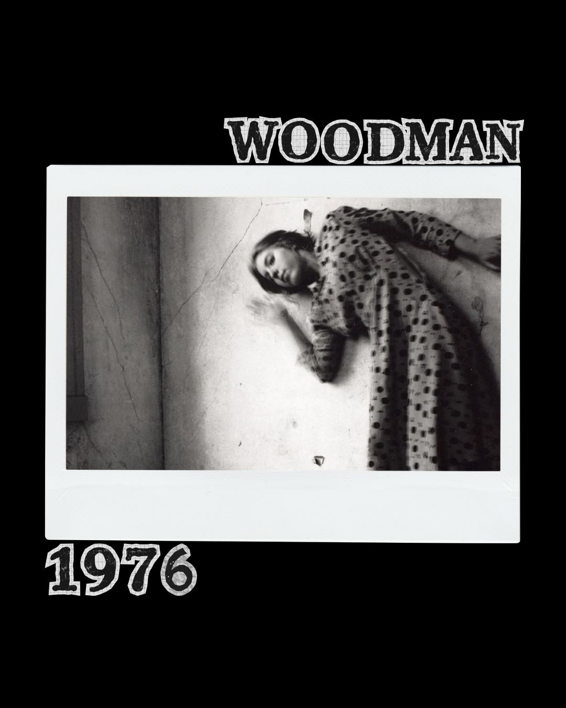
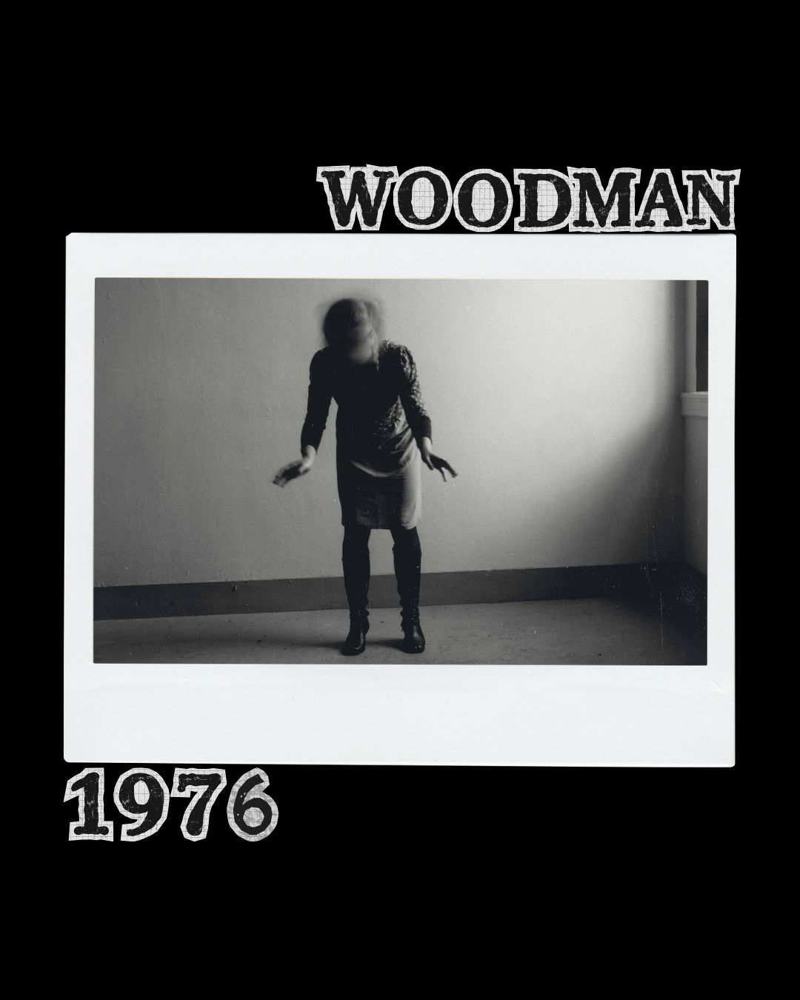
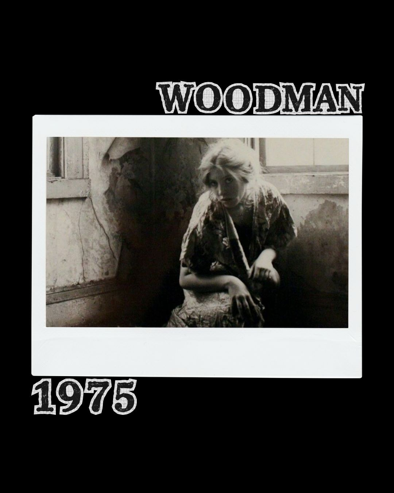

Woodman se caracteriza por un estilo muy particular en blanco y negro y excesivamente expresiva. Por eso, hicimos un pequeño compilado de cinco autorretratos que muestran su esencia.
Francesca nació en 1958 y logro ser reconocida por sus obras en blanco y negro, siendo mayormente autorretratos o retratos de otras mujeres. Sus fotos son sencillamente expresivas y transmisoras de diferentes emocionalidades centrándose en la feminidad y el cuerpo. Hoy Moka te deja 5 de sus obras para que la conozcas y te animes a adentrar en su mundo.





La expresión de Woodman es única y su forma de transmitir es hermosa dentro de lo simple. Es por eso, que hoy a modo de exposición Moka recuerda sus trabajos y les regala visibilidad para que nunca sean olvidados.